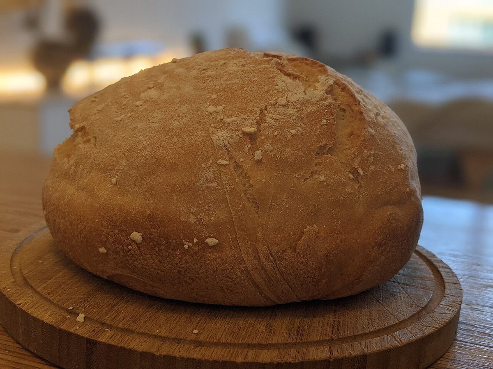

店のこと
店のこと
お店について確認できているのは、所在地とInstagramのアカウントだけです。
このページの「想像してみる」部分は、制作側が想像して書いたものです。お店の実際の様子・考え・商品とは関係がありません。
確認できていること
- 店名は「PARFUM DU PAIN」、業種はパン屋
- 所在地は福井県大野市鍬掛7-40-11(〒912-0071)
- 電話番号はなし。連絡はInstagramから
- 営業時間・定休日・メニュー・価格・ご予約・駐車場は準備中

想像してみる
名前から広がる、香りの話
店名はフランス語で「パンの香り」を意味すると思われますが、由来は分かりません。制作側は、焼きたてのパンの香りは、ひとつではなく何層にも重なっているのでは、と想像しました。最初に立つ香ばしさ、小麦の甘さ、そして食べたあとの余韻。香水のように、香りの順番で一日を思い浮かべてみる、という見立てです(実際のお店の姿ではありません)。



町のこと
大野市について
大野市は福井県の東部、山に囲まれた盆地にある城下町として知られています。ただし、お店が町の歴史や景色と関係しているかどうかは分かりません。盆地の朝にパンの香りが広がる、というのも制作側の連想です。